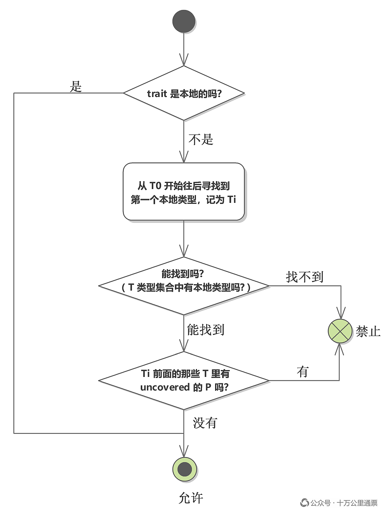

Rust “一致性”和“孤儿规则”深度解读

引言
Rust 的“一致性”（Coherence）是要解决：一种 “type + trait” 组合，只允许有一种 impl 这样一个问题，“孤儿规则”（Orphan Rule）是构建这种“一致性”（Coherence）的规则框架。大部分情况下，人们只使用简单的孤儿规则即可判断出一种 impl 是否合法，但是在一些较为特殊的场景下，为了能为外部的 trait 和 类 型添加 impl，Rust 引入了一个狭窄的豁免条款（RFC 2451），这是真正完备的“孤儿规则”，但复杂得有点可怕。“孤儿规则”是可以推导出来的，经历一遍推导过程可以让我们彻底理解它，本文，我们希望把大家带到“河的对岸”。
正文
一致性（Coherence）和孤儿规则（Orphan Rule）在 Rust 中的影响面非常之广，但大多数情况下，我们根本感觉不到它们的存在，当真正遇到问题的时候，我们才会发现它们是如此复杂和烧脑。比如下面这个问题：
为什么在
impl<T> From<LocalType<T>> for Vec<T>中From和Vec都不在当前 crate 中，但这种 impl 却是合法的?
我们并不想拿一些奇特、生僻的示例进行某种炫技式的表演，以上 impl 并不算复杂，在平时的工作中是有可能会写出来的，更重要的是，这个案例其实对应的是“孤儿规则”中最深的一个逻辑分支，是我们本文将会探索到的最深的地方。此外，还有一个并不是那么重要，但想搞清楚也并不容易的问题：
为什么
impl<T> LocalTrait<T> for Vec<T>会被视作 blanket impl，而impl<T> LocalTrait<Vec<T>> for Vec<T>则不是？
这看似是一个关于 blanket impl 的问题，但解答它需要借用“孤儿规则”建立的理论工具，所以它也是我们本文要探讨的支线话题之一。当然，本文的主旨是全面、深入地介绍“一致性”和“孤儿规则”，并不是针对以上两个问题展开的，它们的答案会在理解了本文的全部内容后不言自明。
备注：本文以 Rust for Rustaceans 一书中的 Coherence and the Orphan Rule 一节的内容为蓝本，参考 RFC 2451 的官方解释，追加了大量的解读和示例说明，要比两个原始出处的介绍理解起来容易得多，但即便如此，本文自第 5、6 两节的内容依然是很艰深的，需要耐心地花一些时间才能完全吃透。另外，推荐本公众号近期的一篇精华好文： 《Zed / GPUI 设计觉醒：现代编辑器 Action 机制解读》
1. 什么是一致性？
在 Rust 语言中，有 type （struct, enum , union）和 trait ，我们经常需要为一个 type 去实现一个 trait，也就是编写一个 impl 语句块 ，构建出一个集属性和行为于一体的实用类型，所以，在 Rust 中我们构建和使用的其实一直是： “type + trait” 的组合 。由于 type、trait、impl 语句块都是独立的语法结构，可以分散在不同的地方编写，于是，不同的人可能会在不同的地方各自实现了同一种 “type + trait” 组合。
也许这在单一 项目 中不会发生，但如果 type 和 trait 分别来自于两个不同的被广泛使用的 crate 的话，那么，它们的组合实现将会爆炸式增长，每一个需要使用它们的第三方库和项目都需要编写自己的实现。而如果再把泛型引入进来的话，就会在另一种维度上增加这种“重复实现”的可能性。针对同一种 “type + trait” 组合的多种实现势必会带来混乱，编译器无法确定应该采用哪一种实现，于是， Rust 规定：针对一种 “type + trait” 组合，只允许有一种 impl，这就是所谓的“一致性”（Coherence） 。
2. 孤儿规则：杜绝多重实现，维持一致性
规定有了，要采取什么措施才能杜绝“多重实现”呢？我们假设 type 和 trait 分属两个 crate，这是常态，则：
方法一：impl 完全倒向 trait 那一侧
只允许在 trait 所在的库中为一个外部的 type 编写它的实现代码，也就是限制 impl 语句块只能和它的 trait 待在同一个 crate 中，如此一来，只有 trait 所在的库才能实现 trait，别的库实现不了，这样就不会有重复实现了。但这一决策的副作用也是非常大的，如果大量的第三方库也想为自己的类型实现这个 trait，它们不能在自己的 crate 中编写，只能在 trait 所在的这个库中为各种第三方类型编写这个 trait 的实现，也就是说：这个海量的工作会落到 trait 库的维护者身上，这是不切实际的（工作量大，且无法穷尽）。
方法二：impl 完全倒向 type 这一侧
只允许在 type 所在的库中为一个外部的 trait 编写它的实现代码，也就是限制 impl 语句块只能和它的 type 待在同一个 crate 中，这虽然解决了方法一面临的问题，却带来了方法一没有的问题，那就是：如果想为大量的第三方库中的类型实现这个 trait，不能在 trait 所在的 crate 中编写，只能到各个第三方库中去为它们的类型编写这个 trait 的实现，也就是说：这个海量的工作会分散到各个第三方库的维护者身上，这同样是不切实际的（根本没有这种协作模式）。
以上两种“单边倒”的策略都会“顾此失彼”，理想的处理方式是找到一种均衡的策略，避免以上两种方法中出现的极端状况。这种平衡策略就是：既允许 impl 在 trait 所在的 crate 中写，也允许 impl 在 type 所在的 crate 中写，但前提是 impl 针对的 trait 或 type 必须有一个是定义在当前 crate 中的，也就是说：只有当 trait 或 type 二者有其一是定义在你的 crate 中时，你才能在自己的 crate 中为这个 type 实现这个 trait，这就是“孤儿规则”（Orphan Rule） 。
有了“孤儿规则”之后，你就能为一个外部（定义在其他 crate 中）的 type 实现自己的 trait，同时也可以为你自己的 type 添加外部 trait 的实现。典型的案例就是：你既可以为自己的类型实现标准库中的 Display trait，又可以为 Vec<T> 类型实现你自己的 Paginate trait（一个由你自定义的分页功能），但你却不能为 Vec<T> 类型实现 Display ，因为这里的 type 和 trait 都不属于你的 crate，孤儿规则会禁止这种行为。
然而，需要提前告诉大家的是：以上关于孤儿规则的解释其实并不完全准确，它只是一个易于理解的简化版本，因为你没法用它去解释我们在文章开头提到的那种情形：为什么在 impl<T> From<LocalType<T>> for Vec<T> 中 From 和 Vec 都不在当前 crate 中，但这种 impl 却是合法的？要解释这个问题，必须使用完备版的“孤儿规则”，这要等到 5.3 节才能展开。
3. Fundamental Types：孤儿规则排除在外的类型
有些类型极为重要，因此必须允许任何人为其实现各种特性，即便这似乎违反了孤儿规则。这些类型会被标记上 #[fundamental] 属性，例如 & 、 &mut 以及 Box 。就孤儿规则而言，这类基本类型几乎可以被视为“不存在”或者说“透明”， 孤儿规则判断一个 type 或 trait 归谁时，如果遇到 & 、 &mut 、 Box 这些类型，会直接跳过这一层，往里看 。比如： Box<Local> 会被视为 Local ，从而被判定为本地类型，但 Vec<Local> 则不可以。这样规定的原因是：像 & 、 &mut 以及 Box 这些“修饰”和“包裹”太过普遍，而人们需要的是为它们“修饰”和“包裹”的类型实现 trait，所以，在判定一个类型是本地还是外部时，并不考虑类型中的 & 、 &mut 、 Box 这些类型的修饰和包裹。
这样我们就可以为 &MyType 实现 IntoIterator 这样的特性了。如果仅依据“孤儿规则”，这种实现方式是不被允许的，因为它是为一种非标准类型的特性而实现的，毕竟 IntoIterator 和 & 都来自标准库。Fundamental Type 可以被视作是“孤儿规则”为一些极为常用的类型开的一个“后门”。
4. Covered Implementations：孤儿规则特许的为外部 type 实现外部 trait 的一类 impl
孤儿规则禁止为外部 type 实现外部 trait，这个规则其实是非常严格的，特别是当 type 和 trait 都来自于重度使用的库，比如标准库时，于是，“孤儿规则”在 Fundamental Type 之外，开了另外一个“后门”。考虑这样一种典型的场景：在我们当前自己的 crate （也称“本地”）中，有一个名为 Pair<T> 的结构体，它有 a 、 b 两个字段，我们很希望能在它和 Vec<T> 之间建立 from/into 的转换关系，就是这样：
1 | let p = Pair { a: 10, b: 20 }; |
这需要我们为 Vec<T> 实现 From<T> ，这个 impl 语句块应该是这样的：
1 | impl<T> From<Pair<T>> for Vec<T> { |
对于 Pair 所在的这个 crate 来说， Vec<T> 和 From<T> 都是外部的，按照前面介绍的孤儿规则，这是不允许的，然而实际上，它却是可行的， 上面这种 impl 形式就是“Covered Implementation” （注意，这个名称并不是 Rust 的官方术语，而是 Rust for Rustaceans 一书的作者起的，因为官方没有针对这种 impl 起名，但这个名称起得非常好，covered 一词抓住了这个 impl 的关键特征，阅读完后面的章节你会体会到这一点），因为，在这里， 孤儿规则引入了一个狭窄的豁免条款（在 RFC 2451 中正式提出），允许在非常特定的情况下为外部类型实现外部 trait 。
如果我们能找到一种约束规则，允许为外部 type 实现外部 trait 而不会引发重复的 impl，这当然是一件天大的好事，但问题就在于：绝大多数情况下，为外部 type 实现外部 trait 的 impl 根本找不到这种规则，而 Covered Implementations 是目前唯一能“圈选”出所有可能的重复实现并“确定”其中一种实现的规则，所以它才能被引入进来，关于对 Covered Implementations 更深刻的解读，要等我们重新认识孤儿规则之后，才会对它有更深刻的认识。
5. 重新认识孤儿规则
我们在第 2 节介绍了孤儿规则，在第 3、4 节介绍了孤儿规则的两种例外情形，特别是对于 Covered Implementations，我们不得不问的是：为什么 impl<T> From<Pair<T>> for Vec<T> 这种 impl 能被允许？还有别的类似形式吗？这里总该有个“标准”吧？当然得有，而且，这个“标准”还是“孤儿规则”定的，准确地说是完备的“孤儿规则”，而我们在第 2 节介绍的孤儿规则其实是一个简化版本。在这一节，我们来重新认识一下孤儿规则。
5.1 impl 的声明形式
首先，为了让解释更加准确和清晰，我们必须对 impl 声明中出现的各种类型进行一下编号，因为这些编号以及它们的顺序也会在规则中提到。我们用下面这种形式来表示（注意：这是 Rust 语言 参考手册 中使用的官方描述形式）：
1 | impl<P1..=Pn> Trait<T1..=Tn> for T0 |
..= 是借用了 Rust 的闭区间语法： 1..=n 表示 1 , 2 , …, n 。所以：
-
P1..=Pn：表示P1,P2, …,Pn，即一组泛型参数； -
T1..=Tn：表示T1,T2, …,Tn，即一组类型； -
T0：就是 Self 的类型，它被当作“第 0 个类型”，要和 trait 的类型参数一起排序，在后面的检查规则中会使用这个编号。
注意： T0 是 for 后面的整个部分，如果是 for Vec<T> ，那 T0 = Vec<T> ，而 T1..=Tn 则是 trait 尖括号里的类型，如果是 MyTrait<T> for ，那 T1 = T ，如果是 MyTrait<Vec<T>> for ，那 T1 = Vec<T> ，此外，后面还会出现 T0..Ti ， .. 是左闭右开区间，表示 T0 , T1 , …, T(i-1) ，不包含 Ti 。以上标记完全展开的话就是下面的样子：
1 | impl<P1, P2, …, Pn> Trait<T1, T2, …, Tn> for T0 |
5.2 简单示例
为了能更好地理解并熟练认出以上 impl 描述形式中的符号和编号，我们需要做几个小练习，从易到难，慢慢递进。
例 1：impl 没有泛型参数，trait 也没有类型实参
1 | impl Display for Meters |
| 记号 | 内容 |
|---|---|
| P | 没有 |
| T0 | Meters |
| T1…Tn | 没有（ Display 不带类型实参） |
例 2：impl 没有泛型参数，trait 有一个类型实参
1 | impl From<i32> for Meters |
| 记号 | 内容 |
|---|---|
| P | 没有 |
| T0 | Meters |
| T1 | i32 |
例 3：impl 有多个泛型参数，trait 也有多个类型实参
假设有一个带两个类型参数的 trait： trait Convert<A, B> {} 。
1 | impl<X, Y> Convert<X, Vec<Y>> for Option<X> |
| 记号 | 内容 | 其中的 P 是否 covered |
|---|---|---|
| P1 | X |
类型参数声明，不适用 |
| P2 | Y |
类型参数声明，不适用 |
| T0 | Option<X> |
X 被 Option 包着，所以， X 是 covered type |
| T1 | X |
X 单独出现，没被任何类型包裹，所以， X 是 uncovered type |
| T2 | Vec<Y> |
Y 被 Vec 包着，所以， Y 是 covered type |
在这个示例中，我们第一次看到 covered type 和 uncovered type 这两个概念，这是 Rust 语言参考手册中定义的重要概念，简单介绍一下：
-
covered type ：作为另外一种泛型类型的类型参数出现的类型。covered 意为：有一层覆盖物的，以示例中出现在
T0位置上的Option<X>为例，类型X就是被类型Option覆盖着的，所以，T0位置上的X是 covered（注意，指的是X不是包裹它的外层类型） -
uncovered type ：就是单独出现，没有作为另外一种泛型类型的类型参数出现的类型，以示例中出现在
T1位置上的X为例，类型X单独出现，没有被任何类型覆盖，所以，T1位置上的X是 uncovered
5.3 完备的“孤儿规则”
OK, 所有的基础概念都已介绍完毕，我们重新看一下真正的“孤儿规则”描述吧：
-
trait 是本地的吗？即：trait 是在当前 crate 中定义的吗 ？若是，直接 ☑ 允许（就是前面给出的简化版的孤儿规则）；
-
否则， 从 T0 开始往后找，找到第一个本地类型，记为 Ti 。若一个都没找到，直接 ☒ 禁止；
-
若找到， 检查 Ti 前面的那些 T（不含 Ti）有没有 uncovered 的 P 。没有则 ☑ 允许，有则 ☒ 禁止；
其中， Ti ，也就是第一个本地类型，在孤儿规则的判定中非常重要，后面会反复提到它，所以得给它起一个名字，本文我们把它叫：“锚点”，至于为什么会这么叫，后面会再解释。以上判定规则用下图会表示得更清晰一些：

让我们拿几个例子练习一下， From 是标准库中的 trait，显然是外部的， Local 是一个本地类型，下面的表格列举了几种 impl 形式，然后给出了判定它们是否合法的过程：
| 本地书写的 impl | 第 1 步 | 第 2 步：第一个本地类型 Ti | 第 3 步：Ti 之前有没有 uncovered P | 结果 |
|---|---|---|---|---|
impl From<Local> for Vec<Local> |
From 不是本地 trait，继续往下看 |
T0 = Vec<Local> 不是本地类型；T1 = Local 是，所以 i = 1 |
只需检查 T0，T0 里没有任何 P | ☑允许 |
impl<T> From<Local> for Vec<T> |
From 不是本地 trait，继续往下看 |
T1 = Local ，i = 1 |
T0 = Vec<T> ， T 是 covered |
☑允许（通过 RFC 2451 新放开的写法） |
impl<T> From<Local> for T |
From 不是本地 trait，继续往下看 |
T1 = Local ，i = 1 |
T0 = T ，是 uncovered |
☒ 禁止 |
impl<T> From<T> for Vec<T> |
From 不是本地 trait，继续往下看 |
T0 = Vec<T> 不是本地类型，T1 = T 也不是 |
第 2 步已经失败 | ☒ 禁止 |
这个完备版本的“孤儿规则”能完全兼容前面所说的：只有当 trait 或 type 二者有其一是定义在你的 crate 中时，你才能在自己的 crate 中为其实现该 trait，同样也能解释第 5 节介绍的 Covered Implementations，同时，还能杜绝后面会提及的一种被称为“对称冲突”的漏洞，所以以上的描述是最完备的。
最后，我们用上面介绍的新规则来推导一下它是否真的兼容“简化版”的孤儿规则：
-
当 type 是本地类型时：
impl<P1, P2, …, Pn> ForeignTrait<T1, T2, …, Tn> for LocalType第 1 步：ForeignTrait 不是本地 trait，继续往下看；
第 2 步：第一个本地类型是 T0 = LocalType，i = 0；
第 3 步：Ti 之前(T0 之前)已无任何 T 类型，自然也不会有 uncovered 的 P
结论：合法
-
当 trait 是本地 trait 时：
impl<P1, P2, …, Pn> LocalTrait<T1, T2, …, Tn> for ForeignType第 1 步：LocalTrait 是本地 trait，直接通过检查；
结论：合法
6. 孤儿规则的推导
完备版本的“孤儿规则”非常强大，如同公式一样准确，但这正是我们困惑的地方：为什么？为什么是这样“无厘头”的规则？这背后肯定有某种内在的逻辑，所以我们还得再往下深挖一层，我们来试着推导一下孤儿规则。
6.1 目标和现状
目标 ：任意一个具体的 “type + trait” 组合，全世界最多只有一个 impl。
现状 ：crate 之间的依赖关系构成一个“有向无环图”，一个 crate 只能看到自己和自己的上游依赖，两个 crate 之间只可能是：“上下游关系”或“互不依赖关系”中的一种。
“上下游关系”就是依赖关系，“上游”指的是你的 crate 所依赖的 crate，而“下游”则是指依赖你这个 crate 的那些 crate；“互不依赖关系”则是指两个 crate 彼此没有出现在对方的上游中，也可称之为“平行关系”。
注意，crate 之间的关系其实就是一个单纯的“有向无环图”问题， 不管是“上下游关系”还是“互不依赖关系”，它们都不是限定在某个项目中的关系，而是在所有 crate 构成的全局 DAG 中，crate A 是否依赖 crate B，由 A 自己的 Cargo.toml 决定，和 A 被用在哪个项目里无关。所以“A、B 之间是‘上下游关系’还是‘互不依赖关系’在所有项目中都一样” 。上述两种关系，在 DAG 中其实是有专门术语的，分别叫：可比较（comparable）和不可比（incomparable），只不过太抽象了，所以我们还是用“上下游关系”和“互不依赖关系”来描述。
与此同时，在一个项目中，项目本身是一个 crate，它会依赖多种 crate，这些 crate 之间也有两种关系：“父子关系”和**“兄弟关系”**，它们和“上下游关系”与“互不依赖关系”是两套不同的关系。比如： 原本是“互不依赖关系”的两个 crate，它们在项目中可以通过 Cargo.toml 安排成“兄弟关系” ，原本是“父子关系”的两个 crate 也可以通过 Cargo.toml 安排成“兄弟关系”，但这些“安排”改变不了两个 crate 之间本来的关系，因为这些依赖都是从项目所对应的这个 crate 到这两个 crate 建立的 DAG 中的“边”，而不是两个 crate 之间的“边”。你可能会认为：项目所对应的这个 crate 不就是在这两个 crate 中间建立的新“边”吗？不是，因为边是有方向的！看一下图就知道了，假设 A 和 B 是两个互不依赖的 crate，在 app 中它们被定义成了“兄弟”，这并不表示 A 和 B 通过 app 建立了“间接”的关联，因为依赖（也就是边）是有方向的，从 A 或 B 是无法走到对方的，因为没有 A -> app 或 B -> app 这样的“边”：
1 | app |
上面这个示例正好能揭示产生冲突的 impl 的原因，我们假设 A 和 B 都写了覆盖同一种 Covered Implementations，由于它们是“互不依赖”关系，彼此看不到对方，所以它们各自独立编译和使用时不会出现冲突， 但当 app（第三个 crate）同时引入它们时，冲突就暴露出来了 ：
| 编译 | 能看到两个 impl 吗 | 结果 |
|---|---|---|
| A | 只能看到自己的 | 通过 |
| B | 只能看到自己的 | 通过 |
| app | 两个都能看到 | 冲突在这里才暴露 ，但 app 改不了 A 和 B 的代码 |
孤儿规则正是为了解决这一问题才提出的。我们说：基于 crate 间的这两种拓扑关系，假设有 A、B 两个 crate，在两种情况下，两个 crate 可能会写出冲突的 impl：
| 情形 | 拓扑关系 | 例子 | 冲突能否被编译器发现 |
|---|---|---|---|
| 1 | 上下游关系 | A 在 B 的上游依赖中（或 B 在 A 的上游依赖中） | 能 。B 编译时能看到 A 的 impl，有冲突编译器会报错 |
| 2 | 互不依赖关系 | A、B 在各自的上游依赖里看不到对方 | 不能 。各自编译都通过，直到第三个 crate 同时依赖 A 和 B 时才会发现冲突 |
孤儿规则的提出就是要杜绝第 2 种情形：让两个互不依赖的 crate 写不出相互冲突的 impl ，因为第 1 种情形在编译时可以检查出来，而第 2 种情形编译器是检查不来的，只能通过一些“规则”事先规避，这些规则当然也是编译器的规则，但跟编译器检查上下游关系中的 impl 冲突完全不同，这些规则是“事前干预”，是通过检查 impl 的形式在发生冲突前就报错规避掉了，而检查上下游关系中的 impl 冲突则是“事后干预”，是发现了具体的 impl 冲突后才报的错。那这个”规则“要怎么定呢？一定是要围绕目的去设计，我们继续往下分析。
6.2 第 1 条规则：为什么本地 trait 不用检查，直接允许？
在第 1 条规则中：若 trait 是本地的，则直接判定合法，为什么呢？因为：一个 trait 只会定义在一个 crate 里，任何别的 crate 想给这个 trait 写 impl，必须能“看到”它，也就是必须依赖 trait 所在的 crate。所以 trait 所在的 crate 和其他想要为这个 trait 写 impl 的 crate 必定是上下游关系，这自然会有编译器负责检查冲突，孤儿规则不用管。
6.3 第 2 条规则：如果是外部 trait，为什么必须要“锚定”一个本地类型?
在第 2 条规则中，我们需要找到第一个本地类型 Ti ，我们管它叫“锚点”，为什么需要一个“锚点”呢？因为，对于没有锚点的 impl 来说，如果 Rust 允许它被写出来，那人们就可以在无数个 crate 里写出无数种冲突的 impl。像下面这种典型的无锚点 impl，如果这种 impl 形式被放开，那冲突的 impl 将无法避免:
1 | impl<T> ForeignTrait<T> for ForeignType<T> |
如果我们能找到一种合理的规则，让针对某种“type + trait”组合的 impl 只能写在一个特定的 crate 中，那冲突就能化解。一种可能的思路是：只要在 impl 的头部声明中有一个本地类型，不管是在 for 后面，还是在外部 trait 的尖括号中，便算是跟当前的 crate “有些关系”，借着这层“本地类型”的关系，让这种 impl 只能在当前这个 crate 中书写，也就是把这个 impl “锚定”到当前的 crate 中。
这个想法是靠得住的，因为本地类型只有当前 crate 以及它的下游 crate 知道，与这个 crate 互不依赖的 crate 看不到这个类型，也就写不出它的 impl，而下游的 crate 虽然能写出重复的 impl，但编译器可以帮助识别出来，这样分析的话，这个规则几乎已经是完备的了。
但坦率地讲， 我没法正向推导这个设想，也就是说：我不知道“锚定一个本地类型“的点子是怎么被想来的 ，尽管可以借助 AI，但很快我就意识到这是一个极为复杂的命题，里面有多种变量，且这些变量也不都是自变量，部分变量之间还有耦合关系，这让这个问题异常难解，所以，我没能完成这项工作。
这里，我们只能给出一个关键性的结论： 锚点规则生效之后，能覆盖一种“type + trait”组合的 impl 被限制到了一类 crate 上，这些 crate 在一条上下游链中，如果出现冲突的 impl，编译器可以发现 。
6.4 第 3 条规则：解决“对称冲突”
不过，这一逻辑有一个漏洞：假设 ForeignTrait 是定义在第三方 crate F 中的一个 trait，A 和 B 是互不依赖（彼此不可见）的两个 crate，在它们各自的 crate 中可能出现下面两种 impl：
1 | /// 在 crate A 中 |
两个 impl 都包含各自的本地类型，但当 A 中的 T = B::Local 、B 中的 T = A::Local 时，两者就会覆盖同一种“type + trait” 组合：
1 | (B::Local, F::ForeignTrait<A::Local>) |
两个互不依赖的 crate 出现了冲突，原因在于： A 自己的锚点在 T1，但 A 在 T0 留了一个 uncovered 的 P，B 可以把自己的锚点填进这个位置；B 也同样在 T1 给 A 留了位置，A 也可以把自己的锚点填进这个位置。 两边都允许“type + trait”组合中的另一个位置可以是“任何人”，所以才出现了冲突的实现。我们把这种冲突称为“对称冲突” 。
“对称冲突”发生在两个互不依赖的 crate 中，编译器是检查不出来的，只能靠添加规则来修补漏洞，这就是孤儿规则中的：规则 2、3 要解决的问题！ 孤儿规则的 2、3 条款合在一起表述就是：从 T0 往后找，每个 crate 以自己的第一个本地类型 Ti 作为锚点，并且锚点之前不能有 uncovered 的 P，这个看上去很无厘头的规则其实是在“对称冲突”这个场景下作出的一个“二选一”的决定，那具体来说，这个“二选一”到底是什么样的呢？
把“对称冲突”这个问题摊开来看，之所以会出现对称冲突是因为：从 T0 到 Tn，我们选中了第一个本地类型 Ti 作为锚点后，T 的集合中出现了 uncovered 的 P，只要出现 uncovered 的 P，就有出现“对称冲突”的可能 ，原因我们在上一节的示例中已经解释过了，这里再复述一遍，因为：A 自己的锚点在 T1，但 A 在 T0 留了一个 uncovered 的 P，B 可以把自己的锚点填进这个位置；B 也同样在 T1 给 A 留了位置，A 也可以把自己的锚点填进这个位置。 假如我们能找出对称冲突中两种 impl 的不同，那我们就可以借助它们的差异，选出其中的一种作为合法的 impl，然后杜绝另一种，对称冲突就可以化解，可以说，这就是孤儿规则最原始的设计动机，那对称冲突中的两种 impl 有不同吗？有！虽然它们的最终形式是完全一样的，但是那个促成它们最终一模一样的“变量”：uncovered 的 P 的位置是不一样的！在两种冲突的 impl 中，这个 uncovered 的 P 会分别出现在本地类型（也就是 Ti）的前面和后面 ！看下面的例子就清楚了：
| impl | 锚点 | uncovered 的 P 位置 | 结果 |
|---|---|---|---|
A： impl<T> F::ForeignTrait<A::Local> for T |
T1 | uncovered 的 P（T0），在锚点之前 | ☒ 禁止 |
B： impl<T> F::ForeignTrait<T> for B::Local |
T0 | uncovered 的 P（T1），在锚点之后 | ☑允许 |
孤儿规则中的“锚点之前不能有 uncovered 的 P”实际上就是选择了“uncovered 的 P 出现在锚点之后”的那个 impl 实现，禁止了“uncovered 的 P 出现在锚点之前”的那个 impl 实现 。实际上，如果你是 Rust 语言的主导者，如果你有那个权力的话，完全可以把规则反过来，也就是改为：“锚点之后不能有 uncovered 的 P”，可以非常确定的是：反过来的规则和现在的规则是一样安全的。至于， 为什么 Rust 选择了“锚点之前不能有 uncovered 的 P” ，我们没有找到官方的解释，在 RFC 1023（最早引入“第一个本地类型 Ti”这条规则的 RFC）和 RFC 2451 都没有给出解释。但 原因是可以推测出来的，因为现有的规则更符合人们的设计习惯，人们往往习惯性地把 Self 当作 impl 关系中的主要对象，把 trait 当作次要对象。因此，常见的扩展往往是类型的作者为自己的类型实现外部 trait，而现有规则会优先认领 for Self 的 impl 形式，这就顺应了人们的设计习惯 。
7. Blanket Implementations：孤儿规则理论衍生的 impl 分类
最后，让我们来聊聊 Blanket Implementations，这好像是个临时插入的话题，因为它和我们的主线“孤儿规则”关系不大，但有一点交集，应该说，无论是否有孤儿规则，Blanket Implementations 都会存在，但是，在盘点一个 impl 是否是 Blanket Implementations 时需要使用到“孤儿规则”建立的理论工具。我们先简单介绍一下什么是 Blanket Implementation，它指的是这样一种 impl 形式：
1 | impl<T: Bond> MyTrait for T { |
这一形式的一个鲜明特征就是：for 后面是一个 uncovered 的 T ！这意味着：它一次性地为多种类型实现了 MyTrait 这个 trait。其中文名称可以叫“统一实现”，我个人觉得翻译成“地毯式实现”会更好，借用“地毯式轰炸”一词可以清楚地理解它的含义。blanket impl 只能在 trait 所在的 crate 中实现，因为 type 那一侧是泛型，不对应某个具体的 crate。如果一个 crate 在引入一个 trait 之初没有为其提供对应的 blanket impl 的话，则若在后续的版本中再添加 blanket impl，就会被视为破坏性变更（breaking change，是指原来能正常编译、运行的代码，在库升级版本之后编译失败、无法运行的情况），因为那些使用了 impl MyTrait for Foo 的 crate 可能会因为定义该 trait 所在的 crate 更新而导致编译失败，出现与现有实现冲突的错误。
关于 Blanket Implementations，有一个非常 tricky 的问题，也就是文章开头提到的那个问题：为什么 impl<T> LocalTrait<T> for Vec<T> 会被视作 blanket impl，而 impl<T> LocalTrait<Vec<T>> for Vec<T> 则不是？刚接触 Blanket Implementations 概念的读者一般会认为：只有像前面示例中的那样出现了一个“裸 T”的时候，才能叫“地毯式”实现，显然问题中的两种形式都不算。实际上，这一理解还是过于“表面”，并没有认识到 Blanket Implementations 概念的实质，那它的实质是什么呢？
实际上， Blanket Implementations 的判定规则是：只要 impl 的头部声明中出现了 uncovered 的 P，都是 blanket impl ，这里完全复用了孤儿规则为 impl 头部声明设置的术语。基于这个判定原则，我们来重新分析一下文章开头给出的两个示例：
1 | impl<T> LocalTrait<T> for Vec<T> |
首先，trait 是本地的，所以，这是一个合法的 impl，然后， T0 = Vec<T> ， T1 = T ，T1（也就是 P1）是 uncovered，所以，这是一个 Blanket Implementation。再看下面这个示例：
1 | impl<T> LocalTrait<Vec<T>> for Vec<T> |
同样的，trait 是本地的，所以，这是一个合法的 impl，然后， T0 = Vec<T> ， T1 = Vec<T>) ，T1 中的 P1 是被 Vec<> covered 的，所以，这不是一个 Blanket Implementation。
8. 重新梳理知识结构
在透彻理解了以上所有概念之后，我们就可以清晰地看到这些概念之间的逻辑脉络了，作为本文的收尾，是很好的一个总结。首先，“一致性”是总的纲领，也是所有规则和概念的最终目的，那就是：保证一种 “type + trait” 组合，只能有一种 impl。在这个愿景之下，人们最初的设想是：“单边倒”策略，即：要么让 impl 完全定义在 type 所在的 crate，要么让 impl 完全定义在 trait 所在的 crate，但两种方案都有问题，于是，Rust 设计了“孤儿规则”，在两套方案中做了平衡，即：既允许 impl 在 trait 所在的 crate 中写，也允许 impl 在 type 所在的 crate 中写，但前提是 impl 针对的 trait 或 type 必须有一个是定义在当前 crate 中的，这基本上确立了“一致性”的整体框架。
但是，由于孤儿规则要求 impl 针对的 trait 或 type 必须有一个是本地的，这就完全禁止了为外部 type 实现外部 trait 的可能，但在某些特殊场景下（就是 Covered Implementations 所对应的场景），人们确实有充足的理由需要这样做，于是 Rust 给“孤儿规则”添加了一个狭窄的“豁免条款”，即：RFC 2451，让像 Covered Implementations 那样的实现合法化。
而 Fundamental Types 则是孤儿规则针对类型设立的“过滤规则”，所有被 Fundamental Types 修饰或包裹的类型，在判断类型是本地还是外部时，并不会把外层的 Fundamental Types 考虑进去，而是直接忽略它们，直接考察它们修饰或包裹的类型。Blanket Implementations 则是相对于 Conditional Implementations 的一种 impl 分类。它跟孤儿规则之间并没有太直接的关系，但是判定一个 impl 是不是 Blanket Implementation 需要使用到孤儿规则建立的理论工具。
Rust “一致性”和“孤儿规则”深度解读
https://laurence.enlightgram.com/rust/rust-coherence-and-orphan-rule/